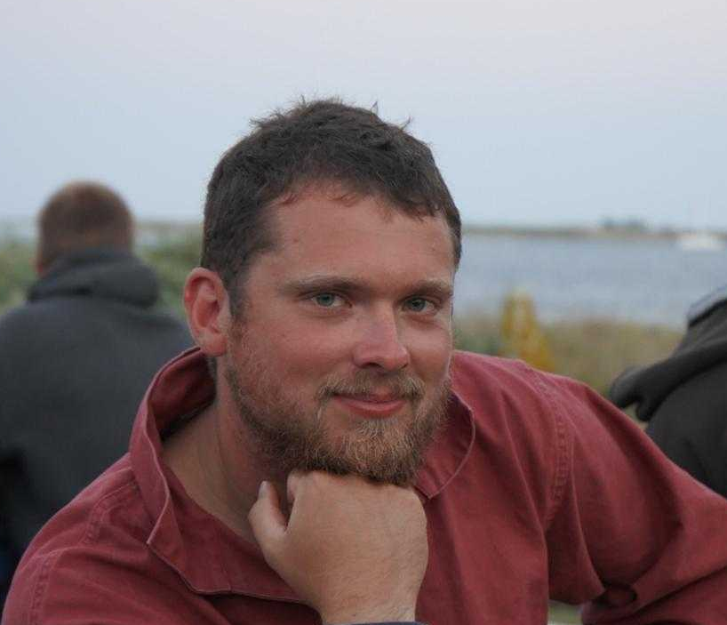

Postdoctoral fellow
Department of Mathematics
University of British Columbia
Room 311F, Leonard S. Klinck Building
Vancouver, BC, V6T 1Z2, Canada
c.soubrier@math.ubc.ca
Supervised by Khanh Dao Duc

My research focusses on mathematical biology and optimal transport.
MATH 100 — Differential Calculus with Applications
Small class instructor
In high-school, I took part in the French–German AbiBac program, then earned an MSc from CentraleSupélec. I completed my PhD in Mathematics at the University of British Columbia under the supervision of Khanh Dao Duc.
I am currently a postdoctoral fellow in the same group, on a short-term position where I apply optimal transport methods to super-resolution biological imaging and high-dimensional genomic data.
A more complete version is available in my CV.